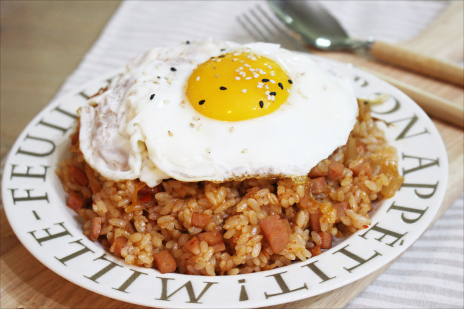
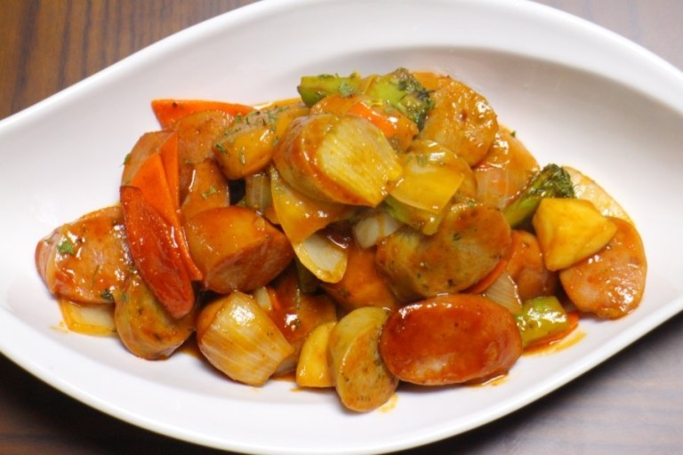
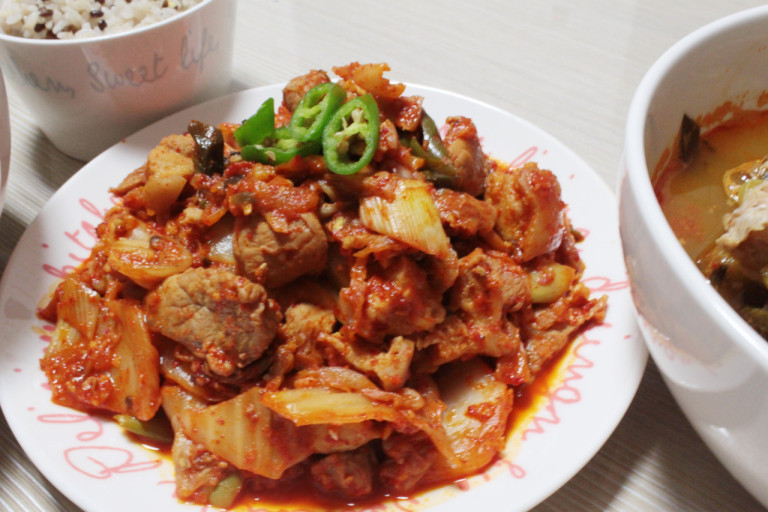

스팸김치볶음밥
<재료>:배추김치,밥,스팸,기름,(참기름),(계란or치즈)(양파),(고춧가루),(간장)

1.기름에 양파→김치→스팸 순으로 후라이팬에서 볶아줍니다.(입맛에 따라 고춧가루나 간장을 넣어줍니다.)
2.밥을 넣어 같이 볶아주고 마지막에 참기름을 두른다.
3.계란프라이나 모짜렐리치즈를 올리면 완성(같이X)
(tip)항상 간장이나 고춧가루 같은 조미료는 조금씩 맛보면서 넣고, 볶음밥에 쓰는 밥은 꼬들밥일수록 좋습니다.
소세지야채볶음
<재료>:비엔나소시지,케찹,설탕,기름,(고추장)(양파),(당근),(파프리카),(메추리알)

1.기름에 당근→★파프리카★→양파 순으로 후라이팬에 볶아줍니다.
2.비엔나(칼집을내면좋아요)를 넣고 케찹이랑 설탕을 넣고 같이 볶아주면 완성
(tip)기호에 따라서 메추리알(비엔나랑같이),고추장(케찹이랑같이)을 넣어주세요.
돼지고기김치볶음
<재료>:돼지고기,김치,고춧가루,후추,다진마늘,(참기름)(파),(고추)

1.돼지고기를 후라이팬에 후추와 고춧가루,다진마늘 넣고 볶아줍니다.
2.고기가 좀 익을때쯤 김치랑 야채를 넣고 볶아주고 마지막에 참기름을 둘러주면 완성
(tip)돼지고기가 돈육같은 기름이없는 부위라면 기름과 함께, 삼겹살이라면 그냥 볶아주세요/후추 대신 허브맛솔트도좋아요/두부가있다면 두부도 데쳐서 두부김치도 가능